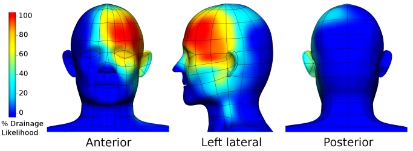

3D VISUALISATION OF SKIN LYMPHATIC DRAINAGE PATTERNS OF THE HEAD AND NECK
Researchers at The University of Auckland's Maurice Wilkins Centre have mapped melanoma lymphoscintigraphy data from the Sydney Melanoma Unit (SMU) onto a 3D anatomically based
computer model of the skin and lymph nodes. This mapped data has enabled visualisation of the likely node fields for melanoma metastasis.
Data was mapped by Dr Hayley Reynolds at the Auckland Bioengineering Institute, supervised
by Dr Nicolas Smith and Assoc Prof Rod Dunbar. Lymphoscintigraphy data from the SMU is courtesy of Prof Roger Uren MD and Prof John Thompson MD.
HEAT MAPS:
The heat maps below show the percentage likelihood that a primary melanoma site will show lymphatic drainage to a specified node field in the head or neck. Different node field displays can be seen by clicking on the buttons below the heat map images.
LEFT PREAURICULAR NODE FIELD
HEAT MAPS:
The heat maps below show the percentage likelihood that a primary melanoma site will show lymphatic drainage to a specified node field in the head or neck. Different node field displays can be seen by clicking on the buttons below the heat map images.

| VIEW LYMPHATIC DRAINAGE PATTERNS OF THE: |
Any questions or comments please email Dr Hayley Reynolds at h.reynolds@auckland.ac.nz